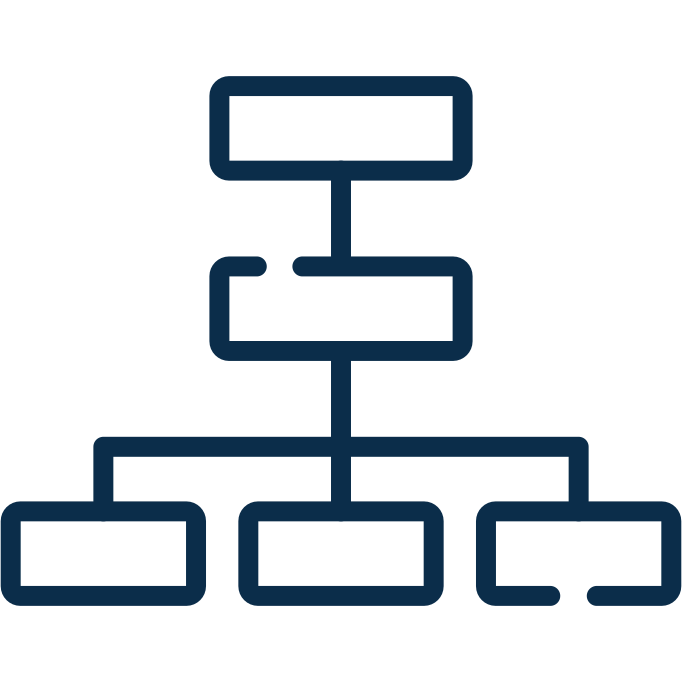

Von der Komplexität
zur Wirkung.
Eine klare, strukturierte Vorgehensweise – für fundierte Entscheidungen und messbare Ergebnisse.
Vorhaben besprechenDer Prozess im Überblick
Fünf Schritte. Ein Ziel.
Von der Ausgangssituation bis zur messbaren Wirkung.
Die einzelnen Schritte
Strukturiert vorgehen. Nachhaltige Ergebnisse erzielen.
Komplexität
Die Ausgangssituation ganzheitlich verstehen.
- Fragestellung und Rahmen klären
- Stakeholder identifizieren
- Optionen und Einflussfaktoren sammeln
Analyse
Informationen strukturiert auswerten.
- Daten und Fakten analysieren
- Chancen und Risiken bewerten
- Handlungsfelder priorisieren
Entscheidung
Eine klare und belastbare Richtung festlegen.
- Optionen vergleichen
- Wirtschaftlichkeit bewerten
- Entscheidungsvorlage erstellen
Umsetzung
Maßnahmen wirksam machen.
- Konkrete Schritte definieren
- Verantwortlichkeiten festlegen
- Umsetzung begleiten
Wirkung
Ziele erreichen und nachhaltigen Nutzen sichern.
- Ergebnisse messen
- Wirksamkeit bewerten
- Erkenntnisse weiter nutzen
Prinzipien
Was die Arbeitsweise auszeichnet.
Vier Leitlinien, die in jedem Projekt den
Unterschied machen.
Technisch machbar
Fachliche Tiefe wird mit praktischem Umsetzungswissen verbunden.
Wirtschaftlich sinnvoll
Optionen werden auf Basis belastbarer Zahlen bewertet.

Organisatorisch umsetzbar
Menschen, Strukturen und Rahmenbedingungen werden von Anfang an berücksichtigt.
Belastbare Entscheidung
Das Ergebnis ist eine klare Grundlage für die nächsten Schritte.
Aus der Praxis
Struktur schafft Tempo.
Eine klare Vorgehensweise reduziert Unsicherheit, beschleunigt Entscheidungen und erhöht die Umsetzungswahrscheinlichkeit – unabhängig von Branche oder Unternehmensgröße.

Bereit für den nächsten Schritt?
Aus einer komplexen Fragestellung kann ein klarer nächster Schritt werden.
Lassen Sie uns über Ihr Vorhaben sprechen.